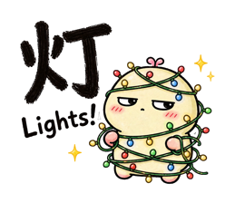

つみかず
LINEスタンプ制作ノート
漢字の意味を、色と表情とポーズで表すキャラクターたち。
キャラクターの考え方
「MOJI BEASTS」「KANJIBEAST」は、漢字一文字をキャラクターにしたLINEスタンプです。漢字の意味は、体の色、表情、ポーズ、小物で表します。たとえば「灯」はイルミネーションのコードに巻かれ、「雪」は小さな雪だるまを抱えています。
画風は、手描きのザラッとしたクレヨン・水彩の質感と太い輪郭が基準です。可愛くなりすぎず、少しシュールで、ひと目で覚えられる顔を目指しています。頭の芽、目の形、ほっぺの位置など、キャラクターの骨格はシリーズを通して変えません。
漢字は大きく黒く、読めることが大事です。下に小さく英語のひとことを添えています（Lights!、Snowman! など）。海外の人にも意味が伝わるように、という工夫です。
作り方の流れ
- テーマを決めて、漢字を8つ選びます（例：クリスマスなら聖・贈・雪・灯・欲・待・喜・眠）。
- 漢字ごとに、色・表情・ポーズの下書きを作ります。画像生成AIはこの下書き段階の道具です。
- 自作ツール「すけるん工房」で背景を透明にし、スタンプ用サイズと白フチを整えます。
- LINE Creators Marketに申請し、審査を経て販売になります。審査には時間がかかることもあります。
背景透過は意外と手間のかかる工程で、チェック柄（市松模様）が焼き付いた画像など、自動で抜けないものもあります。その手間を減らすために作ったのが「すけるん工房」です。自分が使いたいものを、まず自分で作る――このサイトのモットーそのままです。
販売中のセット

KANJIBEAST クリスマス

MOJI BEASTS

ぽわりのスタンプ

博多弁うりぼう
クリスマスセット（全8種）は2026年11月に販売が始まりました。お正月セット「KANJIBEAST お正月」は2026年12月20日ごろ販売開始予定です。ほかに、博多弁のうりぼう、ぽわりの日常など、日常のあいさつに使えるシリーズもあります。
LINE STOREの作者ページ